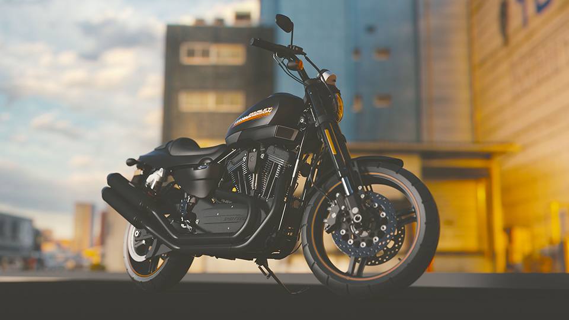

MOTO DEL MES
La motocicleta emblemática que combina la herencia clásica de Harley Davidson con un rendimiento deportivo de alto nivel.
La icónica marca de motocicletas Harley Davidson ha dejado una huella imborrable en la historia del motociclismo, y su modelo XR 1200 X no es una excepción. Esta motocicleta, que combina el legado clásico de la compañía con un rendimiento deportivo sobresaliente, se ha convertido en una elección destacada para los entusiastas de las dos ruedas que buscan una experiencia de conducción emocionante y elegante.
La Harley Davidson XR 1200 X se presenta con un diseño que evoca nostalgia y modernidad al mismo tiempo. Su aspecto robusto y musculoso, típico de las motocicletas Harley, se combina con líneas elegantes y detalles contemporáneos que le confieren un atractivo estético único. La pintura en dos tonos, los acabados cromados y los gráficos distintivos reflejan el auténtico espíritu de la marca y atraen miradas en cada esquina.
Pero no es solo su apariencia lo que hace que la XR 1200 X sea tan especial; su rendimiento es igualmente impresionante. Equipada con un motor V-twin de 1200 cc, esta máquina emana una potencia descomunal que permite una aceleración y una velocidad máxima emocionantes. La entrega de potencia es suave y constante, brindando una experiencia de conducción enérgica y llena de adrenalina tanto en la ciudad como en la carretera abierta.
La suspensión ajustable, junto con los frenos de alto rendimiento, proporcionan un control y una estabilidad excepcionales, permitiendo al conductor disfrutar de curvas cerradas y maniobras precisas. La ergonomía de la motocicleta se ha diseñado pensando en la comodidad y la maniobrabilidad, lo que garantiza que los largos trayectos sean una experiencia placentera.
Además de su rendimiento impecable, la XR 1200 X también se destaca por sus características tecnológicas de vanguardia. Un completo panel de instrumentos digital brinda información esencial al conductor, como la velocidad, el cuentakilómetros y el nivel de combustible, manteniendo todo bajo control. Además, cuenta con opciones de conectividad que permiten integrar dispositivos móviles para acceder a aplicaciones y navegación, lo que añade una dimensión moderna a esta motocicleta clásica.
En resumen, la Harley Davidson XR 1200 X encarna la esencia de la legendaria marca estadounidense. Su combinación de diseño clásico y rendimiento deportivo la convierte en una motocicleta deseada tanto por los aficionados nostálgicos como por aquellos que buscan emociones fuertes. Si estás buscando una experiencia de conducción inigualable que rinda homenaje al espíritu rebelde de Harley Davidson, la XR 1200 X es la elección perfecta para ti.
La Harley Davidson XR 1200 X se presenta con un diseño que evoca nostalgia y modernidad al mismo tiempo. Su aspecto robusto y musculoso, típico de las motocicletas Harley, se combina con líneas elegantes y detalles contemporáneos que le confieren un atractivo estético único. La pintura en dos tonos, los acabados cromados y los gráficos distintivos reflejan el auténtico espíritu de la marca y atraen miradas en cada esquina.
Pero no es solo su apariencia lo que hace que la XR 1200 X sea tan especial; su rendimiento es igualmente impresionante. Equipada con un motor V-twin de 1200 cc, esta máquina emana una potencia descomunal que permite una aceleración y una velocidad máxima emocionantes. La entrega de potencia es suave y constante, brindando una experiencia de conducción enérgica y llena de adrenalina tanto en la ciudad como en la carretera abierta.
La suspensión ajustable, junto con los frenos de alto rendimiento, proporcionan un control y una estabilidad excepcionales, permitiendo al conductor disfrutar de curvas cerradas y maniobras precisas. La ergonomía de la motocicleta se ha diseñado pensando en la comodidad y la maniobrabilidad, lo que garantiza que los largos trayectos sean una experiencia placentera.
Además de su rendimiento impecable, la XR 1200 X también se destaca por sus características tecnológicas de vanguardia. Un completo panel de instrumentos digital brinda información esencial al conductor, como la velocidad, el cuentakilómetros y el nivel de combustible, manteniendo todo bajo control. Además, cuenta con opciones de conectividad que permiten integrar dispositivos móviles para acceder a aplicaciones y navegación, lo que añade una dimensión moderna a esta motocicleta clásica.
En resumen, la Harley Davidson XR 1200 X encarna la esencia de la legendaria marca estadounidense. Su combinación de diseño clásico y rendimiento deportivo la convierte en una motocicleta deseada tanto por los aficionados nostálgicos como por aquellos que buscan emociones fuertes. Si estás buscando una experiencia de conducción inigualable que rinda homenaje al espíritu rebelde de Harley Davidson, la XR 1200 X es la elección perfecta para ti.

La motocicleta Harley Davidson XR 1200 X es conocida por su combinación única de estilo clásico y rendimiento deportivo. A continuación se detallan algunas de sus características destacadas:
Motor: La XR 1200 X está equipada con un potente motor V-twin refrigerado por aire de 1200 cc. Este motor de alto rendimiento proporciona una entrega de potencia suave y constante, brindando una aceleración emocionante y una velocidad máxima impresionante.
Diseño clásico y contemporáneo: La XR 1200 X presenta un diseño que fusiona elementos clásicos de las motocicletas Harley Davidson con detalles contemporáneos. Su aspecto robusto, líneas elegantes y acabados cromados le confieren un atractivo estético único.
Suspensión ajustable: La motocicleta cuenta con una suspensión ajustable tanto en la parte delantera como en la trasera. Esto permite al conductor adaptar la configuración de la suspensión según sus preferencias y las condiciones de conducción, brindando un mayor nivel de comodidad y control.
Frenos de alto rendimiento: La XR 1200 X está equipada con frenos de alto rendimiento que brindan una excelente potencia de frenado y una respuesta precisa. Esto permite al conductor detener la motocicleta de manera segura y eficiente, incluso en situaciones de conducción exigentes.
Panel de instrumentos digital: La motocicleta cuenta con un completo panel de instrumentos digital que proporciona información esencial al conductor, como la velocidad, el cuentakilómetros y el nivel de combustible. Esto permite al conductor mantenerse informado y controlar los aspectos clave de la conducción.
Conectividad: La XR 1200 X ofrece opciones de conectividad que permiten integrar dispositivos móviles. Esto permite al conductor acceder a aplicaciones y funciones de navegación, brindando una experiencia de conducción más conectada y tecnológicamente avanzada.
Ergonomía y comodidad: La motocicleta ha sido diseñada teniendo en cuenta la comodidad y la maniobrabilidad. Su posición de conducción ergonómica y los controles de fácil acceso garantizan una experiencia de conducción cómoda, especialmente en trayectos más largos.
Estas son solo algunas de las características destacadas de la Harley Davidson XR 1200 X. Esta motocicleta representa la fusión perfecta entre el legado clásico de Harley Davidson y el rendimiento deportivo de alto nivel, brindando a los motociclistas una experiencia de conducción emocionante y elegante.
Motor: La XR 1200 X está equipada con un potente motor V-twin refrigerado por aire de 1200 cc. Este motor de alto rendimiento proporciona una entrega de potencia suave y constante, brindando una aceleración emocionante y una velocidad máxima impresionante.
Diseño clásico y contemporáneo: La XR 1200 X presenta un diseño que fusiona elementos clásicos de las motocicletas Harley Davidson con detalles contemporáneos. Su aspecto robusto, líneas elegantes y acabados cromados le confieren un atractivo estético único.
Suspensión ajustable: La motocicleta cuenta con una suspensión ajustable tanto en la parte delantera como en la trasera. Esto permite al conductor adaptar la configuración de la suspensión según sus preferencias y las condiciones de conducción, brindando un mayor nivel de comodidad y control.
Frenos de alto rendimiento: La XR 1200 X está equipada con frenos de alto rendimiento que brindan una excelente potencia de frenado y una respuesta precisa. Esto permite al conductor detener la motocicleta de manera segura y eficiente, incluso en situaciones de conducción exigentes.
Panel de instrumentos digital: La motocicleta cuenta con un completo panel de instrumentos digital que proporciona información esencial al conductor, como la velocidad, el cuentakilómetros y el nivel de combustible. Esto permite al conductor mantenerse informado y controlar los aspectos clave de la conducción.
Conectividad: La XR 1200 X ofrece opciones de conectividad que permiten integrar dispositivos móviles. Esto permite al conductor acceder a aplicaciones y funciones de navegación, brindando una experiencia de conducción más conectada y tecnológicamente avanzada.
Ergonomía y comodidad: La motocicleta ha sido diseñada teniendo en cuenta la comodidad y la maniobrabilidad. Su posición de conducción ergonómica y los controles de fácil acceso garantizan una experiencia de conducción cómoda, especialmente en trayectos más largos.
Estas son solo algunas de las características destacadas de la Harley Davidson XR 1200 X. Esta motocicleta representa la fusión perfecta entre el legado clásico de Harley Davidson y el rendimiento deportivo de alto nivel, brindando a los motociclistas una experiencia de conducción emocionante y elegante.